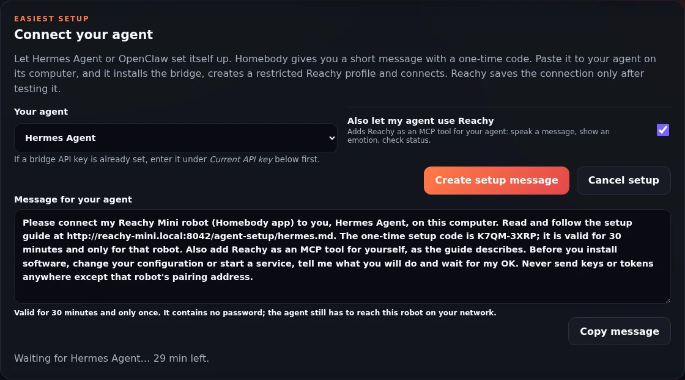
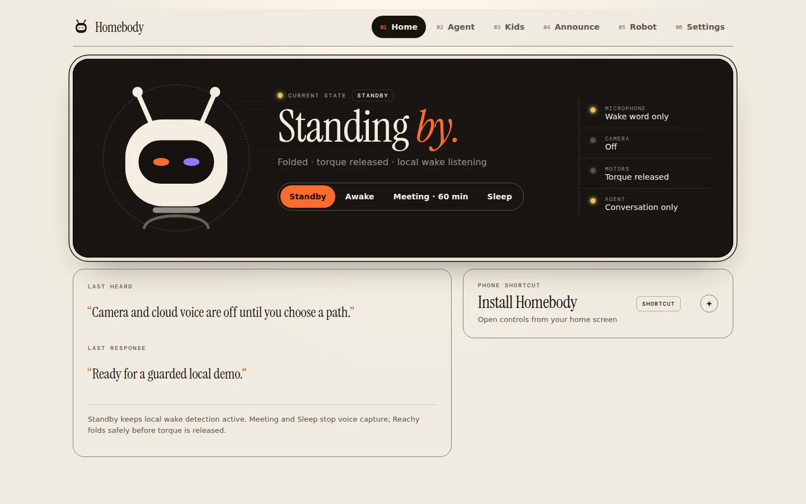
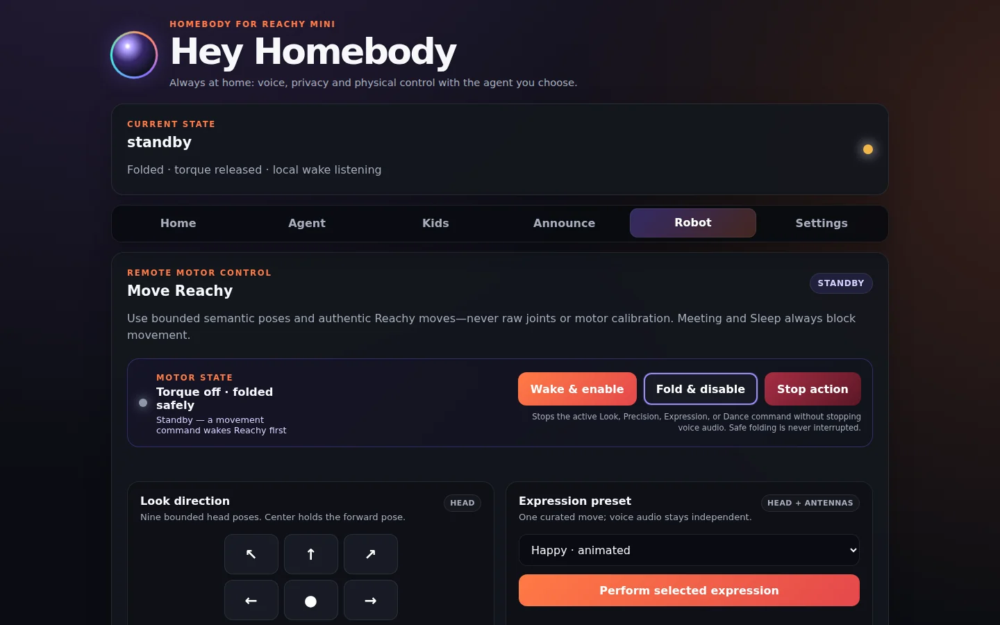

01 / DESK
A work companion
Ask questions, take notes, set reminders and hear announcements through your agent. Meeting mode stops the microphone and wake detection while you are on a call.
AN ALWAYS-ON HOME COMPANION FOR REACHY MINI
Homebody gives Reachy Mini a home in your office or living room. It looks after power, safety and privacy all day, plays supervised games with your kids, and connects to the agent you already trust: Hermes Agent, OpenClaw or more to come. Paste one message to your agent and it connects itself. It also welcomes the games, stories and skills the community builds.

01 / DESK
Ask questions, take notes, set reminders and hear announcements through your agent. Meeting mode stops the microphone and wake detection while you are on a call.
02 / HOME
Reach your home automation through your agent or the Home Assistant bridge. Empty-by-default allowlists keep it to what you have explicitly shared, and consequential actions wait for approval on your phone.
03 / PLAY
Buddy chat, stories, quizzes, riddles, calm-down time and I Spy, with adult controls and moderation. Kids never reach personal memory, smart-home control or power controls.
AGENT-LED SETUP
Connecting a robot to an agent usually means installing a bridge, creating keys, restricting tools and typing addresses into two places. Hermes Agent and OpenClaw can already work on their own computer, so Homebody hands them a guide and a one-time code. You approve their plan; they do the rest.
01 / IN SETTINGS
Choose Hermes Agent or OpenClaw under Connect your agent. Homebody writes a short message with a one-time code that lasts 30 minutes. Optionally, it also lets your agent use Reachy as a tool.
02 / TO YOUR AGENT
The agent follows a guide served by the robot itself and downloads the bridge with checksums. It creates a separate, tool-restricted Reachy profile, so voices in the room never reach its terminal or files, and then pairs.
03 / TESTED, THEN SAVED
Reachy saves nothing until it has reached the bridge with the agent's key and checked that the agent behind it is ready and restricted. If something is off, the agent is told exactly what to fix.

VERIFIED VS GATED
✅ means reference-tested. ◐ means implemented but still requires per-install or final hardware acceptance. 🧪 means implemented but not yet run on that hardware. See the hardware setups guide ↗ for every setup.
| Capability | Reachy + app | Lite + Pi 4 | Hermes | Boundary |
|---|---|---|---|---|
| Local dashboard, privacy and guarded movement | ✅ | ✅ | Optional | Physical acceptance still required |
| Local live camera | ✅ | ✅ | Optional | Explicit opt-in; trusted UI only |
| Agent-led setup (Hermes Agent, OpenClaw) | ◐ | ◐ | ◐ | One-time code from Settings; Reachy saves only a tested connection |
| Voice, announcements and one-frame model vision | — | — | ◐ | Private bridge + configured providers |
| Supervised Kids Mode and personal agent tools | — | — | ◐ | Adult supervision; progressively gated |
| Local vision model (Jetson, GPU PC, Mac) | 🧪 | Via LAN server | Optional | Frames stay on your network; only text reaches the model |
| Physical green/red GPIO buttons | Pi / Jetson | ◐ | Optional | Off by default; two-button acceptance pending |
| Sony Bluetooth controller | Linux hosts | ◐ | Optional | Needs Bluetooth on Linux; final hardware acceptance pending |
TRUST BOUNDARIES
The app host owns local wake, safety, privacy, movement and camera controls. The optional Hermes host keeps identity, memory, tools and provider credentials. Dashed paths cross into private or external systems.

Text summary: Reachy hardware connects to the local companion app, which owns safety, privacy, movement, wake, camera and UI controls. An optional authenticated LAN or VPN bridge connects the app to a private Hermes host. Only enabled capabilities cross from Hermes to external model, speech or approved tool providers.
PHYSICAL STATES
Face tracking and wake-direction sensing stay local to Reachy. Explicit voice commands can select Standby, Awake, timed Meeting, or Sleep. Meeting and Sleep stop microphone capture and tracking, cancel physical actions, clear playback, and disable wake detection. Before any transition releases motor torque, Reachy checks its pose and folds the head gently when needed. Sleep requires the settings UI or a physical control to wake again.
HARDWARE, SAFETY, PRIVACY
Official Reachy Mini imagery explains the real hardware. The project-authored Pi diagram shows the conservative community topology—not a final attached mount and not Wireless equivalence.

Text summary: Keep the Pi off-robot on a ventilated, non-conductive surface. Power Reachy and the Pi from separate approved supplies, connect USB for data only, secure cable strain relief to a stationary support, and keep every cable, mount and device outside Reachy's movement zone. Shared power and robot-mounted placement are not approved.




OPEN SOURCE · EARLY ALPHA
Baseline local evaluation needs Reachy Mini SDK 1.9+, Python 3.11+, supported Reachy hardware and a trusted local network. An agent (Hermes Agent or OpenClaw) and provider access are required only for the connected voice, Kids, vision and agent paths. Start folded and local: confirm Standby, wake with clear space, press Stop and verify safe fold before enabling camera or voice.
$ git clone https://github.com/Timverhoogt/homebody $ cd homebody $ uv build --wheel $ uv pip install --reinstall dist/reachy_mini_homebody-*.whl # Then open Reachy’s app settings → Connect your agent, # send the message to Hermes or OpenClaw, and say: “Hey Homebody” · “Hey Hermes” · “Okay Nabu” · “Hey Reachy”